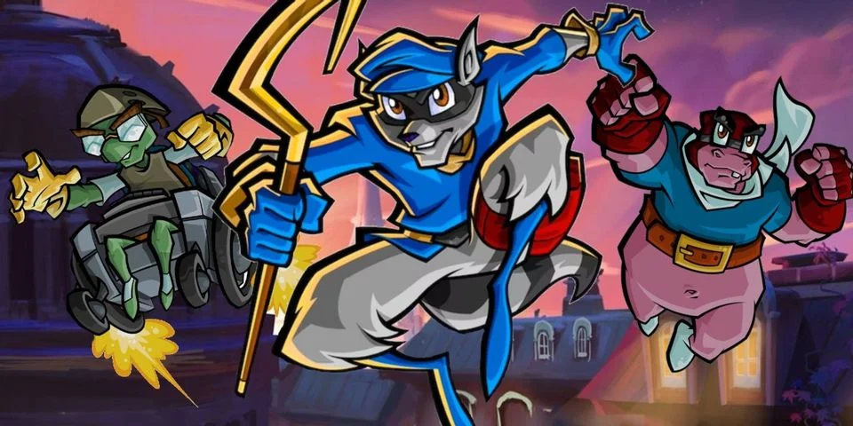

서커 펀치 프로덕션에서 제작했던 게임 시리즈. 현재는 산자루 게임즈에서 제작한다.
지금까지 동물을 주인공으로서 내세운 게임은 많았지만 그 동물 주인공을 도둑으로 내세운 건 이게 거의 최초. 가문 대대로 괴도로서 전 세계적으로 활동한 쿠퍼 가문의 마지막 자손 슬라이 쿠퍼를 중심으로 일어나는 사건들을 다룬다. 전체적인 스토리는 적당히 침침하고 적당히 유쾌하다. 미국 코믹스를 보는 느낌의 그래픽도 굉장히 인상적인 게임. 사소한 부분 하나하나를 모두 미니게임으로 제작을 하여서 즐길거리가 많다. 그리고 생각보다 패러디 요소들이 많아서 소소한 재미를 주기도 한다.
게임 자체의 완성도는 누구도 부인하지 않을 정도로 뛰어나지만, 본래 아동용에 가깝게 제작된 게임인지라 취향에 안 맞는 사람도 더러 있는 듯. 이후 서커 펀치가 제작하는 인퍼머스 시리즈의 아버지격이 되는 작품이다. 배경 자체는 현대의 유럽쪽에서도 약간 교외쪽.[2] 오버 테크놀로지스러운 물건이 다소 있다. 가령 벤틀리의 휠체어나 악당들의 본거지 등등. 항목 첫 생성 시기가 게임 첫 발매 때보다 한참 늦어서 그렇지 상당한 인기작 중 하나이다. 국내에서도 4편을 제외한 1,2,3편이 더빙까지 완전 한글화되어[3] 인지도도 나름 있는 인기작이다. 세계관은 등장인물들이 전부 동물형 수인이라는 것만 제외하면 시간대도 21세기 현대에, 지리적인 부분도 현실과 같다는 걸 알 수 있으며, 현실과 다른 점 몇가지는 기술 수준이 조금 더 발달해 있고, 의외로 라쳇 & 클랭크 시리즈만큼이나 유쾌한 모습 뒤에 인명 경시가 상당히 짙다는 막장스런 부분이 있다. 시리즈 공통점으로 사건의 중심소재가 쿠퍼 가문의 조상들과 관련되었다는 것이다. 1편에서는 도둑맞은 비법서를 되찾고, 2편은 가문의 숙적이었던 클락워크를 완전히 끝장내고, 3편은 조상들이 남긴 유산을 되찾는 것이고, 4편은 쿠퍼 가문 조상들에게 문제가 생기자 직접 과거로 거슬러올라가 해결하는 것이다. 